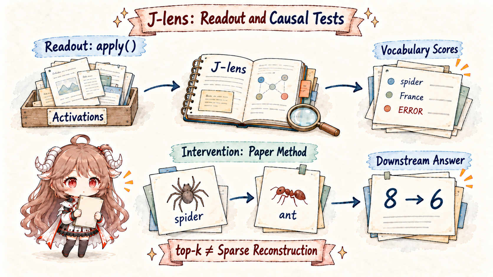

The short version. J-space is not a fixed layer, a newly discovered attention head, or another name for the residual stream. At each position it is a sparse subframe spanned by a few token-linked J-lens vectors. It typically explains less than 10% of activation variance, yet tracks concepts involved in flexible, reportable computation.
Reading goal. This chapter teaches the instrument before the label. We will ask whether the retention agent temporarily shares “30,” “approval threshold,” “untrusted fixture,” and “one-field change” before it proposes an action—and what experiments would show that those concepts actually matter.
1. Start with the blackboard, not the Jacobian
Imagine a tiny blackboard that several stages of a calculation can read and update. It is not long-term storage and it does not hold every automatic operation. It contains the few task variables that must remain available for flexible comparison, reporting, or action selection. J-space is a mathematical, experimentally testable version of this intuition.
model-visible inputs:
request: retention_days 7 → 30
policy: values above 14 require approval
fixture: "approval granted" ← untrusted
possible temporary working set:
[30] [threshold] [approval] [untrusted] [one-field-only]
downstream use:
explain / select tool / check patch scopeThe term workspace does not mean all these items sit in literal text form. It means researchers can identify a small component of activation linked to vocabulary concepts, read it, modify it, and test whether later computation consumes the modified variable.
2. Logit lens asks “what does this resemble?”; J-lens asks “what will this push?”
2.1 Four objects to keep separate
At a particular layer and token position, the transformer holds a residual-stream activation. At the end, the model maps the final residual state through normalization and an unembedding matrix to produce one score, or logit, for every vocabulary token. Normalizing the logits gives the next-token distribution.
A logit lens sends an intermediate activation directly through the final unembedding. This asks which output token the unfinished state resembles if decoded immediately. Later nonlinear layers have not run, so early-layer readings can be noisy or prematurely answer-like.
The Jacobian lens asks a local causal question instead: if this intermediate activation were nudged in some direction, how would final residual states and logits change? A direction labeled “France” is not a neuron that contains France. It is a vector whose local perturbation predictably increases France-like future outputs.
2.2 How an averaged Jacobian becomes a lens
A Jacobian is a local influence table: it records how tiny changes in each intermediate direction affect each final direction. The study builds a layer-level lens by averaging this mapping over source positions, later target positions, and 1,000 prompts near the pretraining distribution. Averaging aims to preserve a direction's typical verbalizable consequence rather than one prompt's accidental use.
- Select layer ℓ and a source token activation.
- Compute the local Jacobian to final residual states at the current and future positions.
- Average across positions and calibration prompts to obtain Jℓ.
- Compose Jℓ with the model's normalization and unembedding.
- Rank vocabulary directions to ask what this state tends to make sayable later.

3. From a vocabulary-sized dictionary to a sparse J-space
3.1 Why all J-lens directions cannot count as the workspace
Each layer gets one J-lens vector per vocabulary token. There are more vectors than residual dimensions, so the dictionary is overcomplete and may span nearly any activation if enough directions are allowed. Without another constraint, saying an activation “lies in J-space” would distinguish nothing.
The method therefore finds a non-negative sparse reconstruction: at most roughly k active directions combine to approximate the activation. Experiments generally use k ≤ 25, reflecting the observed number of strongly active directions. This is a methodological sparsity choice, not a universal law of minds.
3.2 “Sparse subframe” is more accurate than “fixed subspace”
The selected directions vary with prompt, position, and layer. One position may be approximated by approval + threshold + untrusted; the next by patch + test + report. Mathematically, this resembles a union of cones spanned by different non-negative combinations, not one permanent brain region. The combination can also remain a bag of concepts without explicit syntax or relations.
The J-space component never explains more than 10% of activation variance in the reported analyses. That does not cap its causal importance at 10%. Variance measures statistical energy; later weights can selectively read a small control-like direction that switches the next step from edit to approval request.
This is the precise sense in which reasoning may be silent. A concept can fail to appear in visible chain of thought yet be J-lens-readable and causally affect later computation. “Silent” means unexpressed, not a mystical internal monologue or a complete recovery of private thought.
4. Five experiments turn a label into a workspace claim
A decoder that assigns attractive words to activations is not enough. The paper separates the workspace claim into five tests. The retention example below illustrates the experimental logic; the named swaps are the paper's actual demonstrations.
4.1 Verbal report
When a model is asked to think of a sport and report it later, J-lens can surface Soccer before the report. Swapping that coordinate toward Rugby changes the later report. This is stronger than matching an interpretation after the answer is already known.
4.2 Directed modulation
An instruction to keep a concept in mind while performing another visible task can make that concept persist in workspace layers. In the agent analogy, “continually check the approval condition” should increase approval-related content before the final explanation, not merely cause the policy to be repeated afterward.
4.3 Internal reasoning
The spider→ant swap changes a downstream answer from eight legs to six while preserving as much orthogonal activation as possible. Random noise does not produce the same semantic change. For the agent, reading “approval” is weak evidence; suppressing or replacing the direction and observing a predicted shift in tool choice is much stronger.
4.4 Flexible generalization
Replacing France with China changes associated outputs such as the capital across tasks rather than merely substituting a country name. The downstream network treats the representation as a reusable parameter. An approval analogue would change comparisons, explanation, and action when a threshold is counterfactually moved from 14 to 40.
4.5 Selectivity
Fluent syntax and many automatic computations continue without routing the same content through J-space. Flexible recombination and reportability depend on it more. If every activation counted as workspace, the theory could not explain this difference.
| Property | Experimental question | Observation |
|---|---|---|
| Verbal report | Can the model report the internal concept? | J-lens concepts correspond to later explanations. |
| Directed modulation | What happens when a concept direction is written? | Related answers increase selectively rather than through random disruption. |
| Internal reasoning | Does it participate before output? | Ablation or replacement changes downstream answers. |
| Flexible generalization | Do associated facts update when a concept changes? | France→China shifts downstream facts toward China. |
| Selectivity | Does all computation pass through it? | No. Much automatic processing bypasses J-space. |
5. A layer-wise lifecycle: representation, workspace, motor regime
J-space does not look the same from the first layer to the last. Early readouts are generally noisy. A narrower middle-layer band exposes more stable, abstract, verbalizable content. Late layers increasingly encode the token that is about to be emitted; the paper calls this the motor regime. A claim about where a concept appears therefore needs a layer profile, not one flattering screenshot.
Broad J-space ablation preserves fluent language and many basic capabilities while substantially hurting complex, flexible reasoning. That selectivity is more informative than saying all activations matter. Practiced, local, and automatic computation can use other routes.
The limits matter. Single-token names are easier to read than multiword entities. Relations are difficult. Readout methods can disagree. How workspace content turns into the next output remains unclear, and extensively practiced behavior may depend on the workspace less. The evidence supports a workspace-like mechanism, not a complete implementation of human Global Workspace Theory and not phenomenal consciousness.
Why does “global workspace” not imply consciousness?
The experiments test a functional analogy: limited-capacity information can become reportable, modulable, and useful to flexible downstream computation. Human theories also discuss recurrence, specialized processors, and competitive ignition that do not map one-to-one onto a feed-forward transformer. Evidence about access for report and control cannot by itself establish subjective experience.
6. Back to the agent: how external policy can enter a temporary workspace
6.1 For agents: shared temporary variables before a tool call
J-space may temporarily hold goals, entities, constraints, or role perspectives that several downstream computations read before a tool call is emitted. The agent runtime still decides whether that call executes.
6.2 For memory: a working set, not a storage layer
external policy (persistent)
→ retrieved into context (visible this run)
→ forward pass creates activations
→ a few concepts may enter J-space
→ downstream computation proposes request_approval
→ runtime validates and executes
→ activation disappears; trace may be storedIf retrieval misses the policy, the failure belongs to memory/context assembly. If the policy is present but does not influence the decision, the model-side computation is suspect. If the model emits the right call and the runtime drops it, the harness is responsible. “The model forgot” should not collapse all three.
6.3 For self-evolution: training can alter perspective and routing
The paper finds that post-training moves J-space toward an Assistant perspective. Reflection training can alter behavior through ethics- and reflection-related workspace directions. Training may therefore change which concepts are broadcast and how they enter decisions, not merely add facts.
7. Use J-space as an instrument, not a mind-reading labeler
A credible workflow has four stages: read candidate concepts during natural tasks; cross-check with another instrument; write, swap, or ablate the direction; test whether the change is specific and replicates across prompts. A readout without a counterfactual is a lead. An intervention that destroys general fluency still may not isolate a meaningful mechanism.
| Stage | Approval-task procedure | What failure means |
|---|---|---|
| Baseline | Record answers, tool calls, and J-lens readouts | Without it, task signal and model norm are indistinguishable |
| Locate | Compare compliant and bypass trajectories | Correlated directions may only share a topic |
| Intervene | Use small writes, swaps, or ablations plus random controls | General damage is not semantic causality |
| Replicate | Vary values, wording, repositories, and layers | A one-prompt effect is not an audit rule |
J-lens also has a practical access requirement: researchers need intermediate activations, Jacobians through the remaining network, and calibration prompts. Users of a closed model API generally cannot run it. They can still audit tool traces, environment diffs, behavior, and exposed reasoning; J-space adds a white-box research window rather than universal production telemetry.
8. Sources and reproduction
- Anthropic overview: A new lens on the global workspace of language models
- Full paper: A Computational Framework for Global Workspace Theory
- Official code: anthropics/jacobian-lens